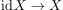
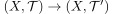
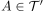
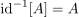
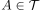
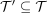

Feinere Topologie und Identitätsabbildung
1. Satz
Sei  eine Menge und
eine Menge und  sowie
sowie  Topologien auf .
Dann sind folgende Aussagen äquivalent:
Topologien auf .
Dann sind folgende Aussagen äquivalent:
- die Identitätsabbildung  mit  ist stetig
 ist eine feinere Topologie als
ist eine feinere Topologie als 
2. Beweis
2.1. a) stetig  fein
fein
Sei , so ist  und wegen der stetigkeit gilt , d.h. es folgt 